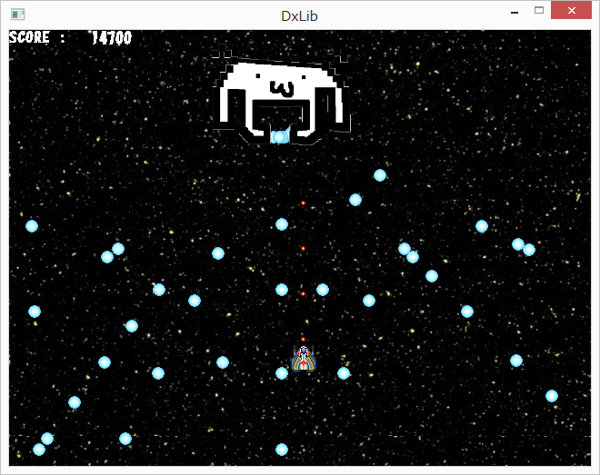

私たちの生活の中にコンピュータをはじめとする情報機器が浸透しています。
テレビ、ビデオや電子レンジなどをはじめとする家庭電化製品から自動車や携帯電話など
私たちのまわりにあるほとんどの機械にコンピュータが組み込まれています。
情報技術科は電気・電子技術やコンピュータの原理・構造、またメカトロニクスやマルチメディア・ネットワークなどの基礎を学習する学科です。
人工知能や自動車の自動運転なども情報技術の最先端技術なのです。パソコンを操作するだけが、情報技術科ではありません。
未来技術の仕事をしませんか。
情報技術科長
情報技術科では主にＣ言語といわれるプログラミング言語を学びます。
また、学年が上がるにつれて、Ｃ言語の他にＣ++や、Microsoft社のexcelに搭載されているマクロ言語のVBA、ウェブページを作成するために開発された言語であるHTML等様々なプログラミング言語を習得します。
電子回路を学ぶことで、電子部品の取り扱い方や使用方法について学び、電子回路制作を行います。
LEDや抵抗、コンデンサ、トランジスタなど、基本的な部品を使った電子回路を作成しはんだ付けを学んでいきます。
2年次、３年次には電子ホタルや、電子ルーレット、イルミネーションなど、様々な電子回路を作成していきます。
ロボットアームやシーケンス制御といった実習で、アクチュエータ(制御対象物)とコンピュータやリレーを繋ぐことで、目標値に近づける技術を身に着けます。
アクチュエータの動作方法の技術やそれに伴うプログラミング技法も学び、自身の知見を広げていきます。
1年次
2年次
3年次
それじゃあインタビューしていくから。よろしく。
どうぞよろしく。
ぶっちゃけ情報技術科ってヲタクの集まりっていうイメージあるけど実際どうなの？
ん～、全員がそうではないよ。比較的他の科よりも多いってだけかも。
やっぱりその理由は情報技術関係からなのかな？
どうだろうね。人それぞれなところあるし・・・。
まぁ僕はパソコンに興味持ったから、もっと知りたくなって入ったけどね。
よく聞くけど情報技術科ってゲームで遊ぶ学科なんでしょ？
自分たちでゲーム作って遊んだり学んだりすることもできるけどそれがメインではないね。
情報技術科はゲームを作る学科ではないことを覚えておいてほしい！
実際簡単なゲーム作るだけでも結構な時間がかかるんだよ！
たとえばこんなよくあるシューティングゲーム。

これだけでも相当な時間を費やしてきたよ。敵の乱数とか自機と敵との当たり判定とか・・・。デバックが超キツかったの覚えてる。
ゲームを作るって簡単に言うけど辛い道のりなんだね。
情報技術科ってパソコンばかりの実習のイメージなんだけどそこのところはどうなの？
確かにパソコンを使う授業だったり実習だったりは多いよ。
でもパソコンを使うばかりじゃないのも確か。上にの実習紹介のところにもあるけど、電子工作実習やロボットを使った制御実習なんかもするし、1年生の時には電気工事実習もあったりするよ。
そうなんだ パソコンばかりが情報技術科じゃないんだね。
じゃあ、最後にもう1つ
ぶっちゃけ情報技術科を出たらパソコン関係の仕事に就けるの？
高校卒業していきなりIT関係の仕事に就くのは厳しいんじゃないかな。
もしIT関係の仕事に就きたいなら卒業後大学か、専門学校に行ってもっと深く情報技術について勉強する必要があると思うよ。でも高校卒業と同時にIT系の会社に就職する先輩もいるからそこは否めないところ。
入った企業も育成はしてくれると思うよ。大学で学んだ後に同じ企業に入ったとしても高校から入ってる人にその世界の知見の多さは少ないと思うし。
しかも高知工業から就職できる会社が大学から就職できるとは限らないしね。高知工業の先輩たち築き上げてきたパイプがしっかりあるから僕らもこうしていられるし。そこは一番の強みだと感じてるよ。
なるほど。今日はどうもありがとね、とても参考になったよ。